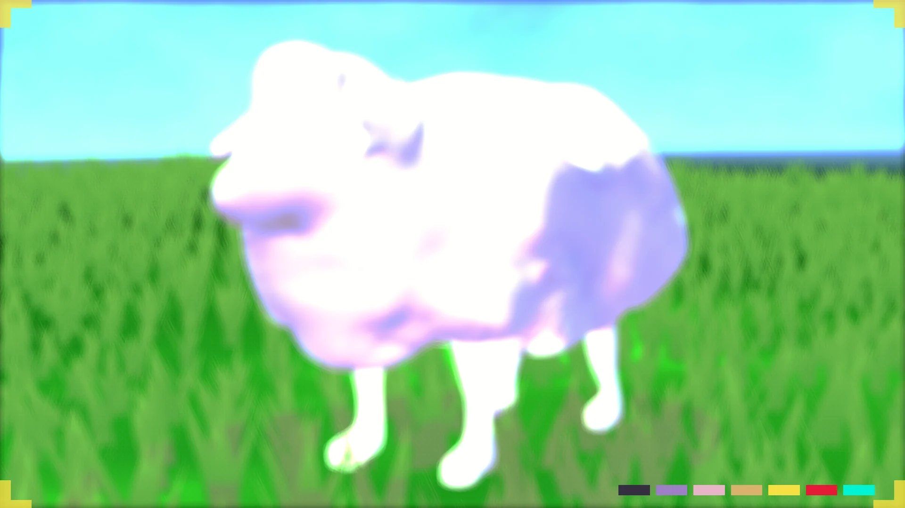
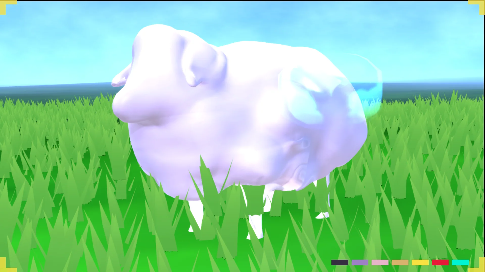

Lookdev inspection
01 / 03Beauty / stylized material
A little creature with a world inside its song. A stylized, music-reactive companion exploring how a note can become a motif, a harmony, and eventually a living environment.

One published capture set, three ways to inspect it. These are existing portfolio stills—not a live game viewport or a new render made for this page.

Published September 2026 scene capture. The game world gives the companion its stage; the intended flock-driven environmental payoff remains an upcoming capstone goal.
The visuals above are existing website assets. Current source rig, exact material response and any newer local renders should still be reviewed directly before being treated as final approved lookdev.
A quick separation between what the project has demonstrated and what the final capstone still needs to show. This page is a curated review, not live Unreal or TouchDesigner telemetry.
Unreal Choral Sheep companion interactions and the Harmonize state were exercised in editor. The source records a C-root fleece REST/HIT comparison. A still image by itself does not prove the interactive trigger.
Character authoring, Blender Geometry Nodes, KineFX and exported animation takes are documented. Some run-retarget, visual sign-off and final export checks remain open.
Three pitch identities, a visibly resolved chord and one environmental response form the planned narrative climax. Not presented here as shipped or runtime-proven.
Evidence summary based on the project’s current-state and semester records. “PIE” means tested in Unreal's Play-in-Editor mode—not necessarily verified in a standalone packaged build.
A proposed 60–90-second short that reveals the musical logic through performance rather than through an engineering lecture.
Establish personality, fleece, movement and warmth.
A sheep harmonizes. One pitch gains a visible identity.
C, E and G meet; the flock resolves a chord.
The resonance travels outward to transform a scene.
The goal is not to expand the project. It is to decide what makes the character and final proof clearer—and how to build a sustainable practice around this kind of work.
How would you simplify the character's deform/export pipeline? What would you prioritize in fleece, animation and silhouette? Is one-note → chord → environmental payoff the right scope for this semester?
What roles best bridge environment art, procedural modelling and technical art? How can a junior artist establish reasonable ownership, communicate capacity and keep creative collaboration sustainable?